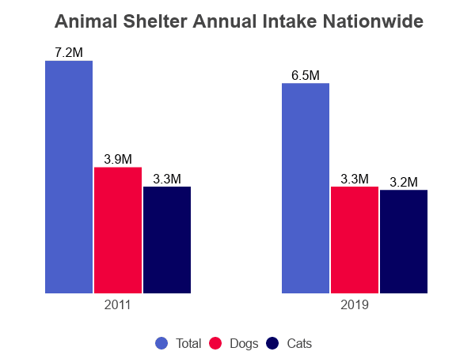

About Us
Welcome to Adoptimals, where we connect loving families with pets in need of a forever home. Our mission is to make adoption a seamless and fulfilling experience. Join us in saving lives, one paw at a time!
History of the Shelter
Adoptimals was created to help people find loving pets while giving animals a chance at a happier life. We aim to make life more fun and fulfilling for both pets and their owners by matching animals with the perfect homes. We believe every pet deserves a second chance, and we’re here to help people experience the love, joy, and companionship that comes with adopting. Adoptimals also provides support to make pet ownership easy and rewarding, with tips and resources to help you along the way. When you adopt through Adoptimals, you’re giving an animal a new start and creating a bond that lasts a lifetime. Together, we’re making a difference for animals and their future families

This is a chart of the amount of dogs and cats put in to adpotion centers. We are trying to get all of these animals loving homes.